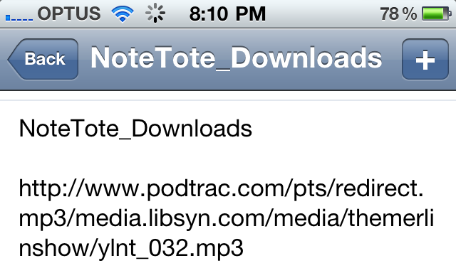

NoteTote
Download stuff to your Mac from anywhere.
Only $8.99.
Doing things on your computer remotely can be a chore. You shouldn’t have to deal with computer-nerd stuff like IP addresses and SSH just to get that neat video onto your computer when your friend tells you about it at the bar. Enter NoteTote.
-

1. Run NoteTote in your Mac’s menubar.
-

2. Add the URL of a file to a new line in a specific note in your Simplenote.
-

3. NoteTote downloads that file to your Mac.
Here’s the down-low.
NoteTote lets you remotely tell your Mac at home to download files. That’s it. Just leave NoteTote running in the menubar on your home Macintosh and when you’re out and about, use Simplenote on your iPhone, iPod Touch, iPad, any Mac or PC Simplenote client, or any internet-enabled computer to give your computer files to download. Your Mac at home downloads the file, and it’s ready for you when you get home. Simple, secure, no technical wizardry required.
NoteTote lets you download any kind of file — .mp4, .mov, .mp3, .zip, .dmg, .app, .pdf, you name it — if it’s a public file on the web, NoteTote can download it. All while you’re away from your computer.
Fancy yourself a power user?
NoteTote can be a great addition to your workflow. The possibilities are endless — click here to see a few ideas to get you started.
Set NoteTote to download files to the “Automatically Add To iTunes” directory on your Mac so all the files you download are added to your iTunes library.
Have NoteTote download files to your Dropbox folder — that way, you can upload any kind of file to your Dropbox while you’re on the go (something Dropbox's official iPhone and iPad apps don't support).
Tell NoteTote to download files to the directory that µTorrent is watching for new torrent files so all of your Wikipedia database dumps, Linux ISOs, and 100% legal, Creative Commons-licensed “videos of your cat” can start downloading as soon as you find out about them.
Use Hazel to neatly sort the files NoteTote downloads and push them around your home network to where they need to be.
Get Prowl to send you a push notification when a file has finished downloading.
Use it right, and NoteTote can become a link in a very powerful chain.
Simple, no?
A lot of power wrapped up in a small package — NoteTote is a steal at just $8.99. Buy it today from the Mac App Store.